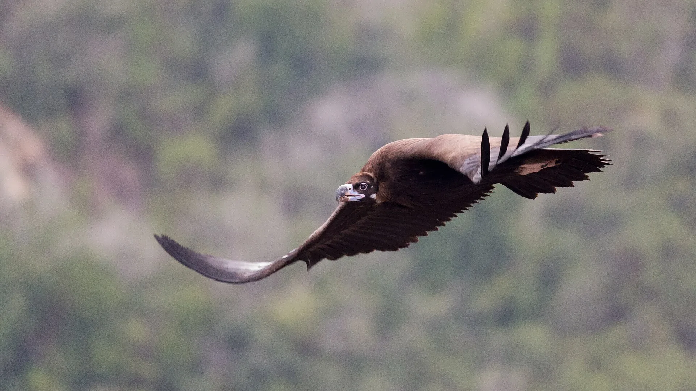

ODD 15À la une · Bulgarie
Les vautours moines de retour dans les Rhodopes
Trois couples ont fait éclore des poussins au printemps, une première depuis 1993. Une histoire de patience, de science et de coopération européenne, à quelques heures de Sofia.
Lire l'article